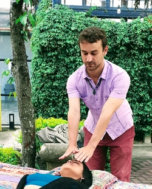

La salud es integridad del cuerpo, alma y espíritu. Si estamos en balance, estamos sanos.
Balance significa ni demasiado mucho, ni demasiado poco, o sea todo con medida. Es obvio que la baja autoestima no es sana, pero cuando uno tenga tanta que se vuelva soberbia, eso tampoco es bueno. La balance está en el punto medio, lo que es una sana confianza en si mismo.
Tanto Sócrates de la Grecia antigua como Confucius de China hablaban mucho de esto, entre muchos.
Trauma – muchas veces ocasionado en la infancia – resulta en un falta de balance y si no tratado, finalmente en una enfermedad que sirve para darnos cuenta de lo sucedido y las enseñanzas de la vida atrás del trauma.
Todos llevamos un trauma de la infancia – que sirve como nuestra lección de la vida, lo que nos toca aprender aquí en la Tierra. Y ese trauma nos tiene secuestrados hasta que sanemos, porque nos hace reaccionar en "modo de autopiloto", sin darnos cuanta de que realmente hacemos y así repetir patrones de nuestros padres.
Eso es la razón porque repetimos los mismos patrones de pareja, situación económica, relaciones con amigos y padres.
Si piensas que tu vida sea demasiado difícil o incluso insoportable, tienes razón. Estar llevados por el trauma lleva consigo mucho sufrimiento, crisis tras crisis, pareja desastrosa tras otra, abuso en la familia etc.
Y no es tu culpa. Todos sufrimos antes de sanar. xxxxxx
Pero no te desesperes, hay solución. Y mejor aún la solución no es algo externo a ti: no te vamos a ofrecer que juntes a una secta de locos, que compres medicamentos "mágicos" caros ni ninguno de otros numerosos trueques que usa la gente que nada más quiere sacar dinero usa.
La verdad es que la solución está en ti. Tu puedes sanar solo y la verdad es que solu tú puedes sanar, nadie más puede hacerlo por ti.
A la vez sí, es difícil y poca gente lo logra por su propia cuenta, incluso con fe a Dios, muchos no saben sanar.
Y eso es lo que ofrecemos nosotros: aunque eres tú quien tiene que tomar el camino, nosotros te podemos guiar.
Desgraciadamente la tradición de aprendizaje casi se ha perdido, sin embargo eso es la manera de enseñanza que se usaba por toda la historia de la humanidad en todas las culturas.
A lo mejor tienes la suerte de tener un abuelo sabio con quien le puedes platicar tu vida y que te puede orientar y darte un punto de vista de una persona madura, alguien que vibra paz y tranquilidad a través de su presencia.
Y si no, aquí estamos nosotros.
Jakub pasó muchos años investigando sabiduría ancestral de antigua India, China y Japón.
A través de su dedicación se le abrió conexión con Dios sin esperarlo y estaba recibiendo guíanza divina desde entonces.
Cuando Jakub abrió espiritualmente, Patricia, su amiga de años le reveló, que también ella se dedicaba a pasar mensajes de Dios a los que lo necesitaban, y le ayudó a Jakub a orientarse y entender esta dimensión de la vida previamente desconocida para él.
PROOF THAT THIS approach works. Sabiduría es como danza,
Camino de Santiago ... foto
Desde allí Jakub desarrolló el don de sanar con energía lo que está practicando hasta el día de hoy.